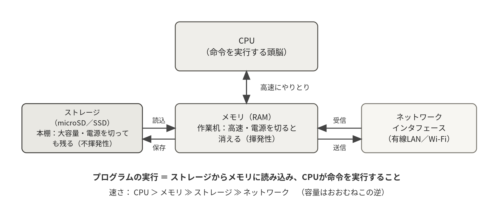
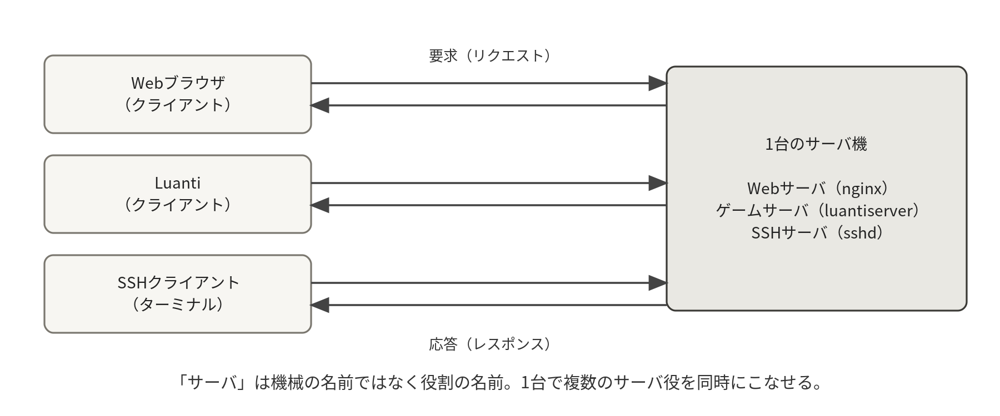
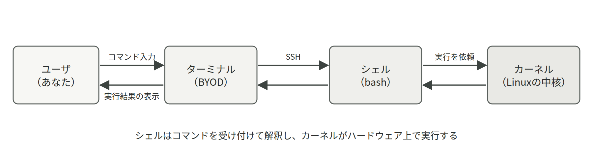

- コンピュータはCPU・メモリ・ストレージ・ネットワークの4点セットでできていること
- メモリとストレージの違い（揮発性と不揮発性）と、それが保存・バックアップの話につながること
- 「サーバ」は機械の名前ではなく役割の名前であること
- OS・カーネル・ユーザランド・ディストリビューションという言葉の関係
1.1コンピュータの構成要素
コンピュータは大きく4つの部品でできている。CPU（中央処理装置）はプログラムの命令を実行する頭脳、メモリ（主記憶、RAM）は実行中のプログラムとデータを置く作業机、ストレージ（補助記憶。SSDやmicroSDカード）はプログラムやファイルを保存しておく本棚、そしてネットワークインタフェース（有線LANやWi-Fi）が外部との通信を担う。Raspberry Pi 400も、ノートPCも、スマートフォンも、データセンターの大型サーバも、規模こそ違えこの4点セットで構成されている点はまったく同じである。
特に重要なのがメモリとストレージの違いである。メモリは高速だが、電源を切ると内容が消える（揮発性）。ストレージは低速だが、電源を切っても内容が残る（不揮発性）。プログラムの実行とは「ストレージ上のプログラムをメモリに読み込み、CPUが命令を1つずつ実行すること」であり、ファイルの保存とは「メモリ上の作業結果をストレージに書き戻すこと」である。
Luantiサーバでいえば、プレイ中のワールドはメモリ上で更新されており、それが定期的にworldディレクトリ（ストレージ）へ保存されるからこそ再起動後も残る。また、速度の序列（CPU内部＞メモリ≫ストレージ≫ネットワーク）を頭に入れておくと、第6章で学ぶ「スワップはなぜ遅いのか」、第8章の「バックアップはなぜ時間がかかるのか」が自然に理解できる。
- メモリmain memory / RAM
- 実行中のプログラムとデータを置く作業机。高速だが揮発性で、電源を切ると内容は消える。
free -hで使用量を確認できる。
- ストレージmicroSD / SSD
- プログラムやファイルを保存しておく本棚。低速だが不揮発性で、電源を切っても内容は残る。
df -hで空き容量を確認できる。

※ ビットとバイト：コンピュータ内部の情報は、すべて0と1の並び（ビット）で表現される。8ビット＝1バイトが容量の基本単位で、約1000倍ごとにKB→MB→GB→TBと呼び名が変わる。「メモリ4GB」「microSD 32GB」という数字は、この単位で作業机と本棚の広さを表している。
プレイ中のワールドはメモリ上で更新されており、ストレージに書き戻されるまでは揮発性の領域にある。電源を直接落とすと、最後の保存以降の変更は失われる。止めるときは sudo systemctl stop luanti のようにサービスを正しく停止し、その後で sudo shutdown -h now を使う（第2回 2-5）。
メモリ（作業机）とストレージ（本棚）はまったく別の資源である。メモリの残りは free -h、ストレージの残りは df -h と、見るコマンドも異なる。
1.2サーバとクライアント
「サーバ」とは特別な機械の名前ではなく、役割の名前である。ネットワーク越しにサービス（機能）を提供する側をサーバ、それを利用する側をクライアントと呼ぶ。Webページを提供すればWebサーバ、ゲームのワールドを提供すればゲームサーバ（Luanti）、遠隔ログインを受け付ければSSHサーバ（sshd）である。1台のRaspberry Piが同時に複数のサーバ役をこなせること、高価な機械でなくてもサーバになれることは、実習で体験したとおりである。
- サーバserver
- ネットワーク越しにサービスを提供する側の役割の名前。機械の種類ではない。1台のRaspberry PiがSSHサーバとLuantiサーバを同時に兼ねることもできる。

ただし、サーバにはクライアントにはない設計上の要請がある。次の4つである。
- 常時稼働していること（利用者はいつ来るかわからない）。
- 遠隔から管理できること（毎回モニタとキーボードをつなぐわけにはいかない）。
- 複数の利用者を同時にさばけること。
- 壊れたときに速やかに復旧できること。
実習で学んだサービス化（systemd、第2回 2-5）、SSH（第1回 1-3）、ユーザ管理（第3回 3-2）、バックアップ（第4回 4-1）は、それぞれこの4つの要請への答えになっている。
サーバは役割の名前であり、機械の格付けではない。実習のRaspberry Pi 400も、常時稼働・遠隔管理・複数利用者という要請さえ満たせば立派なサーバである。逆に、高価な機械でも設定を誤れば止まる。
サーバにしたPCは、今までどおり画面を見ながら使えばよいサーバはモニタもキーボードも付けずに運用するのが普通である。だからこそ遠隔から操作するSSHと、画面がなくても勝手に起動するサービス化（systemd）を最初に学ぶ。
1.3オペレーティングシステムの役割
コンピュータの本体は、CPU・メモリ・ストレージ・ネットワーク機器などのハードウェアの集まりである。しかし、アプリケーション（ゲームサーバも含む）がこれらのハードウェアを直接操作するとしたら、すべてのアプリケーションがCPUの取り合いやメモリの管理を自前で行わなければならず、まともに共存できない。そこで、ハードウェアとアプリケーションの間に立って交通整理をするソフトウェアが必要になる。これがオペレーティングシステム（OS）である。
OSの仕事は大きく2つにまとめられる。1つ目は資源管理である。複数のプログラムにCPU時間を順番に割り当て（スケジューリング）、メモリを配分し、プログラム同士が互いの領域を壊さないように保護する。
2つ目は抽象化である。「ファイルに書き込む」「ネットワークにデータを送る」といった単純な命令の裏で、ストレージの種類やネットワーク機器の違いをOSが吸収してくれるため、アプリケーションはハードウェアの詳細を知らなくてよい。実習でLuantiサーバがSDカードの仕組みを一切気にせずワールドを保存できるのは、OSによる抽象化のおかげである。
1.4カーネルとユーザランド
OSの中核部分をカーネルという。カーネルはメモリ管理、プロセス管理、ファイルシステム、ネットワーク機能、デバイスドライバなど、システムの根幹をすべて担う。一方、私たちが直接触れるシェルやコマンド、各種アプリケーションはカーネルの外側で動いており、この領域をユーザランドと呼ぶ。ユーザランドのプログラムは、システムコールという窓口を通じてカーネルに仕事を依頼する。「Linux」という言葉は、厳密にはこのカーネルの名前である。
- カーネルkernel
- OSの中核。メモリ管理、プロセス管理、ファイルシステム、ネットワーク、デバイスドライバを担う。「Linux」とは本来このカーネルの名前である。
- ユーザランドuser land
- カーネルの外側で動く領域。シェル、
lsなどのコマンド、Luantiサーバ本体はすべてここにいる。

1.5UNIXからLinuxへ
Linuxの設計の源流は、1969年に米国ベル研究所で生まれたUNIXにある。UNIXは「小さな道具を組み合わせて大きな仕事をする」という設計思想を持ち、パイプでコマンドをつなぐ操作方法や、階層型のファイルシステム、マルチユーザの仕組みなど、現在のOSの基本形をつくった。
1991年、当時大学生だったリーナス・トーバルズ氏が、UNIXの設計を参考にしたカーネルを自作しインターネットで公開した。これがLinuxである。ソースコードが公開され、誰でも無償で利用・改変・再配布できるオープンソースソフトウェアとして開発が進んだ結果、世界中の開発者の貢献によって急速に成長した。
現在、Webサービスやクラウドを支えるサーバの大半、スーパーコンピュータのほぼすべて、Android端末、そして本実習のRaspberry Piまで、LinuxはコンピュータインフラのOSとして事実上の標準になっている。サーバ管理者を目指すうえでLinuxの操作が必須とされるのはこのためである。
1.6ディストリビューション
カーネル単体ではOSとして使えない。シェル、基本コマンド群、ライブラリ、パッケージ管理システム、インストーラなどを組み合わせて初めて実用的なOSになる。この「完成品のセット」をディストリビューションと呼ぶ。ディストリビューションには大きく2つの系統がある。
- ディストリビューションdistribution
- カーネルにシェル・基本コマンド・ライブラリ・パッケージ管理システムなどを組み合わせた、すぐ使えるOSの完成品。Raspberry Pi OSもその1つである。
| 系統 | 代表例 | 特徴 |
|---|---|---|
| Red Hat系 | RHEL、Rocky Linux、Fedora | 企業サーバで広く採用。パッケージ形式はrpm、管理コマンドはdnf（yum） |
| Debian系 | Debian、Ubuntu、Raspberry Pi OS | 無償で広く普及。パッケージ形式はdeb、管理コマンドはapt |
本実習で使うRaspberry Pi OSはDebianをRaspberry Pi向けに調整したものであり、Ubuntuとも操作方法はほぼ共通である。系統が違ってもLinuxとしての基本操作（ファイル操作、パーミッション、systemd等）は同じなので、どちらか一方を身につければもう一方への応用は難しくない。
※ 32-bitと64-bit：CPUが一度に扱えるデータの幅の違いで、OSにも32-bit版と64-bit版がある。実習で64-bit版OSを使うのは、Docker等の主要ソフトウェアが64-bit環境を前提に配布されているためである。
dnf install をそのまま実行すればよい
カーネルは共通でも、パッケージ管理は系統ごとに違う。Raspberry Pi OSはDebian系なので apt を使う。dnf や yum はRed Hat系の道具であり、実習の環境では見つからない。
Liteはデスクトップ環境（GUI）を含まない構成というだけで、サーバとしての機能は変わらない。GUIを載せない分のメモリとCPUをLuantiサーバに回せるので、むしろサーバ用途では有利である。
1.7サーバの正体を調べる
サーバに初めてログインしたとき、管理者が最初にすることは「この機械は何者か」を確かめることである。OSの版、カーネルの版、CPUの数、メモリとディスクの量。この4つが分かれば、入れられるソフトウェア、耐えられる負荷、取るべきバックアップの大きさがおおよそ決まる。ここではその調査に使うコマンドを、出力の読み方まで含めて整理する。実習で使うRaspberry Pi 400を例にするが、どれもDebian系Linuxで共通に使えるコマンドである。
OSとカーネルを名乗らせる
Linuxでは「OSの名前」と「カーネルの版」が別の情報である（1.4節）。カーネルの版はuname、ディストリビューションの版は/etc/os-releaseというテキストファイル、その両方をまとめて見せてくれるのがhostnamectlである。ネット上の手順書を試す前に、まずこの3つで自分の環境を確定させる習慣を付けたい。
uname -a # カーネルの情報をすべて表示
uname -m # CPUのアーキテクチャだけを表示
cat /etc/os-release # ディストリビューションの名前と版
hostnamectl # ホスト名・OS・カーネル・アーキテクチャをまとめて| オプション | 意味 | 例 |
|---|---|---|
-a | すべて表示（迷ったらこれ） | uname -a |
-s | カーネルの名前（Linux） | uname -s |
-r | カーネルの版だけ | uname -r |
-m | アーキテクチャ（aarch64 なら64-bit ARM） | uname -m |
-n | ホスト名（hostname と同じ） | uname -n |
出力の読み方：実際にRaspberry Pi 400で実行すると、次のように表示される。
uname -a
Linux mc-24s1234 6.12.47+rpt-rpi-v8 #1 SMP PREEMPT Debian 1:6.12.47-1+rpt1 (2025-09-16) aarch64 GNU/Linux
hostnamectl
Static hostname: mc-24s1234
Operating System: Debian GNU/Linux 13 (trixie)
Kernel: Linux 6.12.47+rpt-rpi-v8
Architecture: arm64見るべきは3か所である。先頭から2番目のmc-24s1234はホスト名で、SSHで繋いだ先が本当に自分のサーバかを確認できる。6.12.47+rpt-rpi-v8はカーネルの版で、+rptはRaspberry Pi財団が配布している版であることを示す。末尾のaarch64（hostnamectlではarm64と表記される）は64-bit ARMという意味で、Dockerイメージを選ぶときにこの値が効いてくる（第5回 5-3）。Operating Systemの行がDebian GNU/Linuxで始まっていることが、aptを使うDebian系である何よりの証拠である。版の番号とコードネーム（上の例では13 (trixie)）は配布イメージによって異なるので、自分の画面の値で読み替える。
- trixieDebian 13 のコードネーム
- Debianの版に付けられた愛称（13はtrixie、1つ前の12はbookworm）。実習で配布するRaspberry Pi OSはDebian 13を土台にしている。自分の版は cat /etc/os-release で確かめる。Raspberry Pi OSはDebianを土台にしているため、ネットで手順を探すときは「Raspberry Pi OS」ではなく「Debian」と自分の版の番号やコードネームで調べたほうが情報が見つかりやすい。
uname -m が aarch64 なら64-bit、armv7l なら32-bitである。Dockerイメージや配布されたバイナリはアーキテクチャごとに別物なので、この1行を確認してから作業に入る。
資源の量を数える（lscpu・free・df）
1.1節で述べた4点セットのうち、CPU・メモリ・ストレージの量は、それぞれlscpu・free -h・df -hで数えられる。-hは「human readable（人間に読みやすい単位で）」の意味で、バイト数の生の桁ではなくGiやMといった単位付きで表示させるオプションである。多くのコマンドで共通の作法なので覚えておくとよい。
lscpu # CPUの詳細
lscpu | head -n 12 # 先頭だけで足りることが多い
nproc # CPUコア数だけを数字で
free -h # メモリとスワップの使用量
df -h # ファイルシステムごとの空き容量
df -h / # ルートだけを見る| オプション | 意味 | 例 |
|---|---|---|
free -h | 単位付きで表示する | free -h |
free -s 秒 | 指定秒ごとに繰り返し表示する（Ctrl+Cで終了） | free -h -s 5 |
df -h | 単位付きで表示する | df -h |
df -i | 容量ではなくinode（ファイル数の枠）の残りを見る | df -i / |
df -T | ファイルシステムの種類（ext4など）も表示する | df -hT / |
出力の読み方：同じサーバで実行した結果を並べて、どの数字を見るべきかを確認する。
free -h
total used free shared buff/cache available
Mem: 3.7Gi 412Mi 2.2Gi 1.0Mi 1.1Gi 3.3Gi
Swap: 199Mi 0B 199Mi
df -h
Filesystem Size Used Avail Use% Mounted on
/dev/root 29G 4.2G 24G 16% /
tmpfs 1.9G 0 1.9G 0% /dev/shm
/dev/mmcblk0p1 510M 62M 449M 13% /boot/firmwarefree -hで見るべき列はfreeではなくavailableである。Linuxは空いているメモリをディスクキャッシュ（buff/cache）に回すので、freeの値は常に小さく見えるが、キャッシュは必要になれば即座に手放される。この例では3.3Giがまだ使える。もう1つの要注意点がSwapのusedで、ここが増え続けているならメモリ不足であり、microSDを仮想メモリとして酷使している危険な状態である（第6章 6.3）。
df -hではMounted onが/の行、すなわちシステム全体が入っている領域のUse%を見る。80%を超えたら整理を始め、90%を超えるとログが書けずサービスが止まり始める。/boot/firmwareはRaspberry Piの起動用の小さな領域で、カーネル更新のときだけ増える。tmpfsはメモリ上の一時領域なので、ここの数字はディスクの空きとは無関係である。
※ free -h と df -h は第3回 3-5 サーバの監視で定点観測の道具として使う。dfが示す使用率は第4回 4-5 障害対応演習のシナリオ「ディスク枯渇」でそのまま判断材料になる。
稼働時間・温度・起動時の記録
サーバは止まらないことが仕事なので、「いつから動いているか」は重要な情報である。uptimeはそれを1行で答える。Raspberry Piには加えて温度の問題がある。小さな筐体にファンが無い構成では、負荷が続くとCPUが高温になり、80度前後で自動的に速度を落とす（サーマルスロットリング）。vcgencmdはRaspberry Pi OSに標準で入っている専用コマンドで、この温度を読める。
uptime # 現在時刻・連続稼働時間・ログイン数・load average
uptime -p # 稼働時間だけを言葉で
vcgencmd measure_temp # CPU温度（Raspberry Pi 専用）
cat /sys/class/thermal/thermal_zone0/temp # 同じ値を1000倍の整数で（他機種でも使える）
grep 'model name\|Model' /proc/cpuinfo # CPUと基板の型番
sudo dmesg | tail # カーネルの最新メッセージ10行出力の読み方：稼働時間・温度・カーネルのメッセージを順に見てみる。
uptime
14:03:21 up 3 days, 2:11, 1 user, load average: 0.08, 0.12, 0.09
vcgencmd measure_temp
temp=47.2'C
sudo dmesg | tail -n 3
[ 3.114820] mmc0: new ultra high speed SDR104 SDHC card at address aaaa
[ 5.902117] Bluetooth: BNEP socket layer initialized
[ 512.338091] hwmon hwmon1: Undervoltage detected!uptimeのup 3 days, 2:11は連続稼働時間である。自分で再起動した覚えがないのにここが数分になっていたら、電源断か異常終了を疑う。末尾のload averageは1分・5分・15分の平均待ち行列で、Raspberry Pi 400は4コアなので4を超え続けていれば過負荷である（詳しくは第6章 6.3）。
vcgencmd measure_tempのtemp=47.2'Cは平常値である。60度台までは通常運用の範囲、80度に近づくと性能が落ちるので、筐体の通気やヒートシンクを見直す。dmesgの各行の先頭にある数字は起動からの経過秒数で、最後の例のUndervoltage detected!は電源の供給不足を意味する。Raspberry Piで原因不明の再起動や、microSDの破損が起きるときの最有力容疑者がこのメッセージなので、見つけたら電源アダプタとケーブルを疑う。
※ dmesgは環境によっては一般ユーザで読めず、dmesg: read kernel buffer failed: Operation not permittedと表示される。そのときはsudo dmesg | tailのようにsudoを付ける。sudo dmesg -Tとすると経過秒数の代わりに実時刻で表示されるので、他のログと突き合わせるときに便利である。
vcgencmd が動かないので、このサーバは壊れている
vcgencmdはRaspberry Pi専用のコマンドで、他のPCやクラウドのLinuxには存在しない。汎用の方法はcat /sys/class/thermal/thermal_zone0/tempで、47200のように1000倍の整数（ミリ度）で返る。
Raspberry Piで体感が落ちる原因は、CPUよりも温度による速度低下、電源不足、microSDの遅さであることが多い。vcgencmd measure_temp、sudo dmesg | grep -i voltage、free -hのswapの3点をまず確認する。
1.8起動と停止の正しい作法
サーバを止めるという操作は、デスクトップPCのそれとは重みが違う。動いているサービスの利用者を切断し、メモリ上の未保存データを書き戻し、ファイルシステムの整合性を保ったうえで電源を落とす必要がある。ここではその手順と、絶対にやってはいけない止め方を確認する。
reboot と shutdown
再起動はsudo reboot、電源断はsudo shutdown -h nowである。-hはhalt（停止）、-rはreboot（再起動）を意味する。時刻を指定すると予告付きで停止でき、その間ログイン中の全員の画面に警告が流れる。複数人が使うサーバでは、この予告が礼儀であり事故防止でもある。
sudo reboot # すぐ再起動
sudo shutdown -h now # すぐ電源を切る
sudo shutdown -r +5 "kernel update, back in 5 min" # 5分後に再起動、全員に予告
sudo shutdown -c # 予告済みの停止を取り消す
sudo systemctl stop luanti # 先にサービスを止めてから落とすとより安全| オプション | 意味 | 例 |
|---|---|---|
-h | 停止（電源を切る） | sudo shutdown -h now |
-r | 再起動する | sudo shutdown -r now |
+分 | 指定した分数のあとに実行する | sudo shutdown -h +10 |
hh:mm | 指定した時刻に実行する | sudo shutdown -h 23:30 |
-c | 予約済みの停止を取り消す | sudo shutdown -c |
| 末尾の文字列 | ログイン中の全員に流す予告メッセージ | sudo shutdown -r +5 "maintenance" |
電源ケーブルを抜く、あるいは電源スイッチを長押しして落とすのは最後の手段である。書き込み途中のmicroSDカードは、ファイルシステムそのものが壊れて起動しなくなることがある。Luantiのワールドも、最後の保存以降の変更が失われる。必ずsudo shutdown -h nowで止め、画面（またはSSHの切断）で停止を確認してから電源を抜くこと。
出力の読み方：予告付きの停止を実行すると、画面には次のように出る。
sudo shutdown -r +5 "kernel update, back in 5 min"
Reboot scheduled for Sat 2026-09-19 14:10:00 JST, use 'shutdown -c' to cancel.
Broadcast message from root@mc-24s1234 on pts/0 (Sat 2026-09-19 14:05:00 JST):
kernel update, back in 5 min
The system will reboot at Sat 2026-09-19 14:10:00 JST!1行目が予約の確認、Broadcast message以降がログイン中の全員の端末に流れる予告である。Reboot scheduled forの時刻を見て、意図した時刻かどうかを必ず確認する。違っていればsudo shutdown -cで取り消せる。SSH越しに実行した場合、停止が始まると接続は切断され、端末にはConnection to mc-24s1234.local closed by remote host.と表示される。これは異常ではなく、正しく止まった証拠である。
誰がいつログインしていたかを見る（who・w・last）
止める前に確認すべきは「今ほかに誰か作業していないか」であり、止めたあとに確認すべきは「本当に自分の操作で止まったのか」である。前者はwhoとw、後者はlastが答える。lastはログインと再起動の履歴を新しい順に並べるコマンドで、身に覚えのない再起動や、見知らぬ接続元を見つける手がかりにもなる。
who # 今ログインしている人
w # 今ログインしている人＋何をしているか
last -n 10 # 直近10件のログイン履歴
last reboot -n 5 # 直近5回の再起動履歴
last -F # 年まで含む完全な日時で表示※ Debian 13 では last が最初から入っていないことがある（ログイン記録の仕組みが wtmpdb に移ったため）。command not found になったら、ログイン履歴は journalctl -u ssh で、再起動の履歴は journalctl --list-boots で調べればよい。
出力の読み方：ログイン状況と再起動履歴の実際の表示を見る。
w
14:03:21 up 3 days, 2:11, 2 users, load average: 0.08, 0.12, 0.09
USER TTY FROM LOGIN@ IDLE JCPU PCPU WHAT
taro pts/0 10.20.30.52 13:58 0.00s 0.15s 0.02s w
hanako pts/1 10.20.30.57 14:01 1:12 0.04s 0.04s -bash
last reboot -n 2
reboot system boot 6.12.47+rpt-rpi-v8 Wed Sep 16 11:52 still running
reboot system boot 6.12.47+rpt-rpi-v8 Tue Sep 15 09:30 - 11:50 (1+02:20)wのFROM列は接続元のIPアドレスで、自分のBYODのアドレスと一致するかを見る。WHAT列は各人が今実行中のコマンドなので、ここに長時間かかる処理が動いていれば、停止を待つべきだと判断できる。IDLEは無操作の時間で、上の例のhanakoは1分12秒何もしていない。
last rebootは起動のたびに1行増える。still runningが今動いている稼働、その下が前回の稼働で、括弧内の(1+02:20)は1日2時間20分動いていたという意味である。ここに自分の知らない再起動が並んでいたら、電源の瞬断や熱暴走を疑い、sudo dmesgやjournalctl -b -1（1つ前の起動のログ）を見に行く。
切れる原因は、サーバの停止、ネットワークの断、無操作によるタイムアウトの3つがある。まずもう一度sshしてみて、繋がるなら単なる切断である。繋がらないならpingで経路を確認する（第7章）。
shutdown -h now を打ったのに、緑のランプが点いたままだ
Raspberry Piは停止しても電源が供給されている限りランプが残ることがある。SSHが切れ、画面にreboot: Power downが出ていれば停止は完了している。数秒待ってから電源を抜く。
1.9パッケージ管理 apt の全体像
Debian系のLinuxでは、ソフトウェアは「パッケージ」という単位で配布され、aptがその出し入れを担当する（1.6節）。Windowsのようにインストーラを1つずつダウンロードして実行するのではなく、公式のサーバ（リポジトリ）にある一覧から名前を指定して入れる。依存する部品も自動で一緒に入るため、たいていのソフトウェアは1行で導入できる。実習でluanti-serverを入れたのがまさにこれである（第2回 2-2）。
- リポジトリrepository
- パッケージが置かれている配布元のサーバ。どこを見に行くかは
/etc/apt/sources.listと/etc/apt/sources.list.d/以下のファイルに書かれている。
update と upgrade は別の操作である
初心者が必ず一度は混同するのがapt updateとapt upgradeである。updateはリポジトリから「どのパッケージの何版が今あるか」という一覧（カタログ）だけを取り直す操作で、サーバ上のソフトウェアは1つも変わらない。実際に新しい版へ入れ替えるのがupgradeである。カタログが古いままでは新しい版を知りようがないので、必ずupdateを先に実行する。
sudo apt update # パッケージ一覧を取り直す（システムは変わらない）
apt list --upgradable # 更新できるものを確認する
sudo apt upgrade -y # 実際に新しい版へ入れ替える
sudo apt full-upgrade # 依存の都合でパッケージの削除が要る更新も行う出力の読み方：カタログの取り直しが成功したかどうかは、最後の1行で判断する。
sudo apt update
Hit:1 http://deb.debian.org/debian trixie InRelease
Get:2 http://deb.debian.org/debian-security trixie-security InRelease [48.0 kB]
Fetched 48.0 kB in 2s (24.0 kB/s)
Reading package lists... Done
12 packages can be upgraded. Run 'apt list --upgradable' to see them.Hitは「前回から変わっていないので取り直さなかった」、Getは「新しいカタログを取得した」という意味で、どちらも正常である。最後の12 packages can be upgradedが結論で、この数だけ新しい版が出ている。ErrやCould not resolveが出た場合はネットワークか名前解決の問題なので、パッケージではなく通信を疑う（第7章）。trixie-securityの行は、セキュリティ修正専用のリポジトリである。
sudo apt update を実行したので、ソフトウェアは最新になった
updateで新しくなるのは一覧だけで、サーバ上のソフトウェアは1つも変わっていない。入れ替えるにはsudo apt upgradeまで実行する必要がある。
apt が「Could not get lock」と言って動かない
別のaptや自動更新が同時に走っている。同時に2つは動けない仕組みなので、1分ほど待ってからやり直す。強制的にロックファイルを消すのは、パッケージ管理の情報を壊す危険があるので避ける。
入れる・消す・調べる
導入はinstall、削除はremoveまたはpurgeである。両者の違いは設定ファイルを残すかどうかで、removeはプログラムだけを消して/etc以下の設定を残し、purgeは設定ごと消す。入れ直して設定をやり直したいときはpurge、一時的に外すだけならremoveと使い分ける。導入に伴って自動で入った依存パッケージは、不要になっても残るのでautoremoveで掃除する。
apt search luanti # 名前と説明から探す
apt show luanti-server # 版・サイズ・依存関係・説明を見る
sudo apt install -y パッケージ名 # 導入（-y は確認を省略）
sudo apt remove パッケージ名 # 削除（設定ファイルは残る）
sudo apt purge パッケージ名 # 設定ファイルごと削除
sudo apt autoremove # 誰からも必要とされなくなった依存を掃除
apt list --installed | grep luanti # 入っているものを絞り込んで確認
apt-cache policy luanti-server # 入っている版と入手可能な版を比べる| サブコマンド | 意味 | 例 |
|---|---|---|
install | 導入する。すでに入っていれば更新になる | sudo apt install -y ufw |
remove | プログラムだけ削除し、設定は残す | sudo apt remove ufw |
purge | 設定ファイルまで削除する | sudo apt purge ufw |
autoremove | 不要になった依存パッケージを掃除する | sudo apt autoremove |
search | 名前と説明から探す | apt search sqlite |
show | 1つのパッケージを詳しく見る | apt show vim |
list --installed | 導入済みの一覧を出す | apt list --installed |
clean | ダウンロード済みのdebファイルを捨てて容量を空ける | sudo apt clean |
出力の読み方：導入済みの版と入手できる版を突き合わせる。
apt-cache policy luanti-server
luanti-server:
Installed: 5.10.0+dfsg-5+deb13u1
Candidate: 5.10.0+dfsg-5+deb13u1
Version table:
*** 5.10.0+dfsg-5+deb13u1 500
500 http://deb.debian.org/debian trixie/main arm64 Packages
500 http://deb.debian.org/debian-security trixie-security/main arm64 Packages
100 /var/lib/dpkg/status実習で配布するイメージ（Debian 13 trixie）では、Luanti 5.10.0 がこの形で表示される。+deb13u1 はDebian 13向けにセキュリティ更新が1回入った版という意味で、末尾の /var/lib/dpkg/status の行は「今この機械に入っている記録」を指す。日本語ロケールの環境では Installed が「インストールされているバージョン」のように日本語で表示されるが、意味は同じである。
Installedが今入っている版、Candidateがapt installで入る版である。この2つが同じなら最新で、違えば更新できる。Installed: (none)なら未導入という意味である。*** の印は現在選ばれている版を示し、その下の行が入手元のリポジトリとアーキテクチャ（arm64）である。「入っているつもりなのに動かない」ときは、まずこのコマンドで本当に入っているかを確かめる。
- 依存関係dependency
- あるパッケージが動くために必要な別のパッケージ。
aptは依存を自動で解決して一緒に導入し、不要になったものはapt autoremoveで外せる。
リポジトリの設定とセキュリティ更新
どのリポジトリを見に行くかは/etc/apt/sources.listと、/etc/apt/sources.list.d/の中の追加ファイルで決まる。Docker（第5回 5-2）のように配布元が独自のリポジトリを持つソフトウェアは、このsources.list.dに1ファイル追加する形で導入する。追加の際は必ず配布元の公式手順に従うこと。素性の分からないリポジトリを足すことは、そのサーバにroot権限を渡すのとほぼ同じ意味を持つ。
cat /etc/apt/sources.list
ls /etc/apt/sources.list.d/
grep -r --include='*.list' --include='*.sources' . /etc/apt/sources.list.d/ # 追加分をまとめて確認更新の中でも、セキュリティ修正は性質が違う。機能追加ではなく、既知の弱点をふさぐためのものであり、当てないまま公開しているサーバは攻撃の的になる。人手で毎日apt upgradeするのは現実的でないため、実務ではセキュリティ更新だけを自動で当てるunattended-upgradesという仕組みを使うのが一般的である。これは「セキュリティ用リポジトリから来た更新だけを、決まった時刻に自動適用する」設定であり、機能が大きく変わる更新は対象外にできる。
sudo apt install -y unattended-upgrades # 仕組みを導入する
sudo dpkg-reconfigure --priority=low unattended-upgrades # 有効にするか対話で選ぶ
systemctl status unattended-upgrades # 動いているか確認
cat /var/log/unattended-upgrades/unattended-upgrades.log # 何を当てたかの記録※ 自動更新は万能ではない。更新に伴ってサービスの再起動が必要になる場合があり、その瞬間は接続が切れる。実運用では「自動で当てるのはセキュリティ更新だけ」「再起動が要る更新は人が計画して行う」という線引きをするのが定石である。実習のサーバは授業時間中しか使わないので、第2回 2-1のように手動でupdateとupgradeを実行すればよい。
curl ... | sudo bash の1行で入れるのが速くてよい
その1行は「見たこともないスクリプトを管理者権限で実行する」という意味である。aptで入るものはaptで入れ、どうしても外部リポジトリが要るときは配布元の公式文書を読み、追加するファイルの中身を自分の目で確認してから実行する。
apt remove したのに設定が残っていて、入れ直しても前の状態のままだ
removeは/etc以下の設定を意図的に残す。まっさらにしたいならsudo apt purge パッケージ名を使う。
1.10困ったときの調べ方
コマンドの使い方を覚えることよりも大切なのが、「忘れたときに自力で調べられること」である。Linuxには調べる仕組みが最初から組み込まれており、ネットを検索する前にこちらを引いたほうが速く、しかも自分の環境に正しい答えが得られる。検索結果は別のディストリビューションや別の版の情報であることが珍しくないが、手元のmanは今動いているそのコマンドの説明だからである。
man と --help
man コマンド名で詳細な説明書（マニュアルページ）が開く。表示中は↑↓で移動、Spaceで1画面送り、/に続けて語を打つと検索、nで次の一致、qで終了である。この操作はページャ（less）の操作なので、journalctlなど他の長い出力でもそのまま使える。一方--helpは、コマンド自身が持つ短い要約を出すオプションで、「オプションの綴りだけ確認したい」ときに向く。
man ls # 詳細なマニュアル（q で終了）
ls --help # 短い要約
ls --help | less # 要約が長いときはページャに通す
man 5 crontab # 第5節（ファイル形式）の crontab を読む
man -k permission # 説明文から検索（apropos と同じ）マニュアルには節（section）という分類があり、同じ名前でも節が違えば別の内容である。サーバ管理でよく使うのは次の5つである。
| 節 | 内容 | 例 |
|---|---|---|
| 1 | 一般ユーザが使うコマンド | man 1 crontab（crontabコマンドの使い方） |
| 5 | ファイルの書式 | man 5 crontab（crontabに書く5つの欄の意味） |
| 8 | 管理者用のコマンド | man 8 ufw |
| 7 | その他の概念的な説明 | man 7 signal（シグナルの一覧） |
| 2・3 | システムコールとライブラリ関数 | man 2 chmod |
出力の読み方：節番号の意味と、マニュアル本文の並びを確認する。
man -k crontab
crontab (1) - maintain crontab files for individual users
crontab (5) - tables for driving cron
man ls | head -n 5
LS(1) User Commands LS(1)
NAME
ls - list directory contents括弧の中の数字が節番号である。上の例では、コマンドとしての使い方を知りたければman 1 crontab、設定ファイルに何をどう書くかを知りたければman 5 crontabを読めばよいと分かる（第4回 4-3）。マニュアル本文はNAME（1行要約）、SYNOPSIS（書式）、DESCRIPTION（説明）、OPTIONS（オプション一覧）、EXAMPLES（例）、SEE ALSO（関連）の順に並ぶ。急いでいるときはSYNOPSISとEXAMPLESだけ読めば足りることが多い。
※ manが見つからない、あるいはman -kがnothing appropriateとしか答えない場合は、マニュアル本体か検索用の索引が無い。sudo apt install -y man-db manpagesで導入し、sudo mandbで索引を作り直せば使えるようになる。
そのコマンドの正体を確かめる（type・which）
「打ったコマンドが思ったものと違う」という事故は、typeとwhichで防げる。whichはPATH（第3章 3.3）を順に探して実行ファイルの場所を答える。typeはさらに賢く、それがエイリアスなのか、シェルに組み込まれた機能なのか、外部のプログラムなのかまで教えてくれる。cdのようにファイルとして存在しないコマンドがあることを知るうえでも役に立つ。
type ls # エイリアスか、組み込みか、外部コマンドか
type -a python3 # 同名のものをすべて列挙する
which vi # 実体の絶対パス
command -v docker # 存在確認（スクリプトの中ではこれが定番）出力の読み方：3通りの答え方があるので、それぞれの意味を押さえる。
type ls
ls is aliased to `ls --color=auto'
type cd
cd is a shell builtin
type -a vi
vi is /usr/bin/vi
which nonexistent-command
3通りの答えがある。aliased toは~/.bashrcなどで定義された別名で、実体は右側のコマンドである。shell builtinはbash自身の機能で、対応するファイルは存在しない（だからwhich cdは何も答えない）。パスが返れば外部のプログラムである。whichが何も出力せず終了した場合、そのコマンドはPATH上に無い。「command not found」に出会ったら、綴り、導入の有無、PATHの3点をこの順で確かめる（第3章 3.3）。
- マニュアルページman page
- コマンドや設定ファイルの公式な説明書。
man lsのように引き、/で検索、qで終了する。節番号（1はコマンド、5はファイル書式）で同名の別内容が区別される。
検索結果は別のディストリビューションや古い版の説明であることが多く、オプションの綴りが違って失敗する。手元のmanと--helpは、今そのサーバに入っている版の正確な説明である。まずこちらを引く。
man を開いたが、戻り方が分からなくなった
qで終了する。Spaceで次の画面、bで前の画面、/で語を検索、nで次の一致である。これはlessの操作なので、journalctlやgit logの画面でも同じように使える。